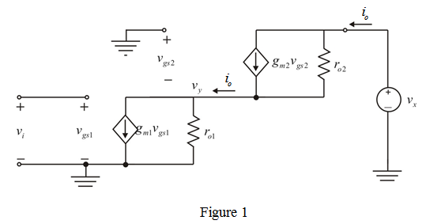

Refer to Figure P7.29 in the textbook for the circuits (a), (b), and (c).
(a)
Given drain current is kept constant
From the \circuit (a), the drain current is,
…… (1)
From the given circuit (b), the drain current is,
…… (2)
Equate equations (1) and (2).
…… (3)
Therefore, over drive voltage of circuit (b) is double that of the original circuit (a) is proved.
The transconductance is,
Since drain current is kept constant, Transconductance varies inversely with the over drive voltage.
Therefore, the transconductance of circuit (b) is halved that of the original circuit (a) is proved.
The voltage gain is,
The voltage gain is proportional to gate length and inversely proportional to overdrive voltage.
Therefore, the voltage gain of circuit (b) is double that of the original circuit (a) is proved.
Since there is no change in gate width to length ratio, each transistor in circuit (c) have same over drive voltage as in circuit (a).
Therefore, over drive voltage of circuit (c) is same as that of the original circuit (a) is proved.
The transconductance of circuit (a) is,
For the circuit (c), the small signal model is shown in Figure 1.

From Figure 1, the output current is,
…… (4)
Write the nodal equation for the circuit.
Substitute for in equation (4).
Hence, equivalent transconductance of circuit (c) is equal to Transconductance of transistor for which input voltage is applied. That is .
Hence, transconductance of circuit (c) is same that of the original circuit (a).
Voltage gain for cascaded transistor is,
The overall voltage gain is proportional to gate length and inversely proportional to overdrive voltage.
In circuit (c), overdrive voltage and channel length are same as that of original circuit.
Hence voltage gain of circuit (c) is increased by a factor of to the gain of original circuit (a).